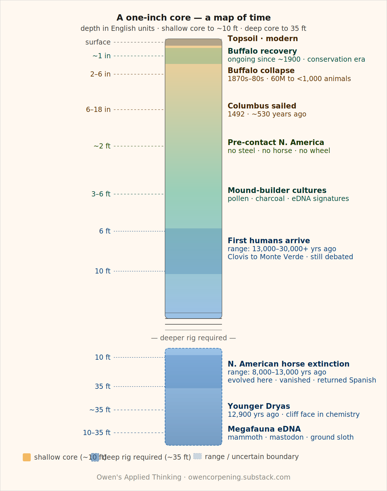

Global water engineering and infrastructure. · 11 articles
Compressed natural gas as a bridge fuel strategy. · 5 articles
Genomics, DNA sequencing and medicine, from an engineer's view. · 4 articles

Single pieces outside a series. · 8 articles